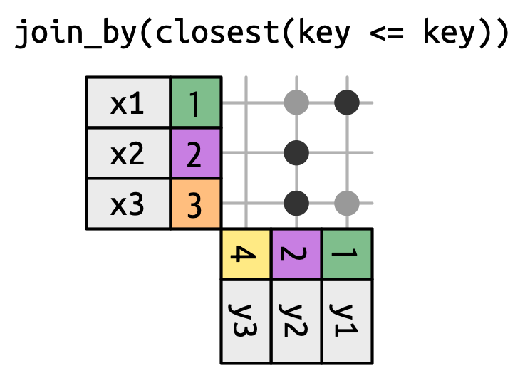

Tools like Excel or Google Sheets let you manipulate spreadsheets using functions.
Spreadsheets are not reproducible: It’s hard to know how someone changed the raw data!
It’s hard to catch mistakes when you use spreadsheets1.
. . .
Today, we’ll use R to manipulate data more transparently and reproducibly.
Logical Operators
Data types in R
Going back to our list of data types in R:
. . .
Factors
Date/Date-time
Logical
Numeric
Missing Values
Strings
Data types in R
Going back to our list of data types in R:
Factors
Date/Date-time
Logical
Numeric
Missing Values
Strings
Booleans
The simplest data type is a boolean, or binary, variable: TRUE or FALSE2.
. . .
More often than not our data don’t actually have a variable with this data type, but they are definitely created and evalutated in the data manipulation and summarizing process.
. . .
Logical operators refer to base functions which allow us to test if a condition is present between two objects.
. . .
For example, we may test
Is A equal to B?
Is A greater than B?
Is A within B?
. . .
Naturally, these types of expressions produce a binary outcome of T or F which enables us to transform our data in a variety of ways!
used when checking if equal to one of several values
Combining comparisons
&:
|:
!:
xor():
both conditions need to hold (AND)
at least one condition needs to hold (OR)
inverts a logical condition (TRUE becomes FALSE, vice versa)
exclusive OR (i.e. x or y but NOT both)
You may also see && and || but they are what’s known as short-circuiting operators and are not to be used in dplyr functions (used for programming not data manipulation); they’ll only ever return a single TRUE or FALSE.
Unexpected Behavior
Be careful using == with numbers:
. . .
x <-c(1/49*49, sqrt(2) ^2)2x11x ==c(1, 2)2print(x, digits =16)
1
Computers store numbers with a fixed number of decimal places so there’s no way to precisely represent decimals.
2
dplyr::near() is a useful alternative which ignores small differences.
Be sure not to cut corners (i.e. writing B < 10 | > 20). The code won’t technically error but it won’t evaluate the way you expect it to. Read more about the confusing logic behind this here.
Like other summary functions, they’ll return NA if there are any missing values present and it’s FALSE.
2
Use na.rm = TRUE to remove NAs prior to evaluation.
3
When you evaluate a logical vector numerically, TRUE = 1 and FALSE = 0. This makes sum() and mean() useful when summarizing logical functions (sum gives number of TRUEs and mean gives the proportion).
[1] TRUE
[1] NA
[1] TRUE
[1] 11.25
Conditional transformations
if_else()
If you want to use one value when a condition is TRUE and another value when it’s FALSE.
. . .
if_else(condition ="A logical vector", true ="Output when condition is true", false ="Output when condition is false")
. . .
x <-c(-3:3, NA)1if_else(x >0, "+ve", "-ve", "???")
1
There’s an optional fourth argument, missing which will be used if the input is NA.
There are a number of helper functions you can use with select() including starts_with(), ends_with(), contains() and num_range(). Read more about these and more here.
# A tibble: 336,776 × 4
carrier tailnum origin dest
<chr> <chr> <chr> <chr>
1 UA N14228 EWR IAH
2 UA N24211 LGA IAH
3 AA N619AA JFK MIA
4 B6 N804JB JFK BQN
5 DL N668DN LGA ATL
6 UA N39463 EWR ORD
7 B6 N516JB EWR FLL
8 EV N829AS LGA IAD
9 B6 N593JB JFK MCO
10 AA N3ALAA LGA ORD
# ℹ 336,766 more rows
Finding Unique Rows: distinct()
You may want to find the unique combinations of variables in a dataset. Use distinct()
It’s not a coincidence that all of these distinct flights are on January 1: distinct() will find the first occurrence of a unique row in the dataset and discard the rest. Use count() if you’re looking for the number of occurrences.
By default, mutate() adds new columns on the right hand side of your dataset, which makes it difficult to see if anything happened. You can use the .before argument to specify which numeric index (or variable name) to move the newly created variable to. .after is an alternative argument for this.
“used” retains only the variables used to create the new variables, which is useful for checking your work. Other options include: “all,” “unused,” and “none.”
By default relocate() moves variables to the front but you can also specify where to put them using the .before and .after arguments, just like in mutate().
group_by() doesn’t change the data but you’ll notice that the output indicates that it is “grouped by” month (Groups: month [12]). This means subsequent operations will now work “by month”.
The NA produced here is a result of calling mean on dep_delay. Any summarizing function will return NA if any of the values are NA. We can set na.rm = TRUE to change this behavior.
# A tibble: 1 × 1
avg_delay
<dbl>
1 NA
summarize() Example
Let’s see what this looks like in our flights dataset:
When you summarize a tibble grouped by more than one variable, each summary peels off the last group. You can change the default behavior by setting the .groups argument to a different value, e.g., “drop” to drop all grouping or “keep” to preserve the same groups. The default is “drop_last”.
flights |>summarize(delay =mean(dep_delay, na.rm =TRUE), n =n(),4.by = month )
4
.by works with all verbs and has the advantage that you don’t need to use the .groups argument to suppress the grouping message or ungroup() when you’re done.
There are 105 groups but 108 rows! Why? slice_min() and slice_max() keep tied values so n = 1 means “give us all rows with the highest value.” If you want exactly one row per group you can set with_ties = FALSE.
Merging Data
Why Merge Data?
In practice, we often collect data from different sources. To analyze the data, we usually must first combine (merge) them.
. . .
For example, imagine you would like to study county-level patterns with respect to age and grocery spending. However, you can only find,
County level age data from the US Census, and
County level grocery spending data from the US Department of Agriculture
. . .
Merge the data!!
. . .
To do this we’ll be using the various join functions from the dplyr package.
Joining in Concept
We need to think about the following when we want to merge data frames A and B:
Which rows are we keeping from each data frame?
Which columns are we keeping from each data frame?
Which variables determine whether rows match?
Keys
Keys are the way that two datasets are connected to one another. The two types of keys are:
Primary: a variable or set of variables that uniquely identifies each observation.
When more than one variable makes up the primary key it’s called a compound key
Foreign: a variable (or set of variables) that corresponds to a primary key in another table.
Primary Keys
Let’s look at our data to gain a better sense of what this all means.
airlines records two pieces of data about each airline: its carrier code and its full name. You can identify an airline with its two letter carrier code, making carrier the primary key.
airlines
# A tibble: 16 × 2
carrier name
<chr> <chr>
1 9E Endeavor Air Inc.
2 AA American Airlines Inc.
3 AS Alaska Airlines Inc.
4 B6 JetBlue Airways
5 DL Delta Air Lines Inc.
6 EV ExpressJet Airlines Inc.
7 F9 Frontier Airlines Inc.
8 FL AirTran Airways Corporation
9 HA Hawaiian Airlines Inc.
10 MQ Envoy Air
11 OO SkyWest Airlines Inc.
12 UA United Air Lines Inc.
13 US US Airways Inc.
14 VX Virgin America
15 WN Southwest Airlines Co.
16 YV Mesa Airlines Inc.
airports records data about each airport. You can identify each airport by its three letter airport code, making faa the primary key.
airports
# A tibble: 1,458 × 8
faa name lat lon alt tz dst tzone
<chr> <chr> <dbl> <dbl> <dbl> <dbl> <chr> <chr>
1 04G Lansdowne Airport 41.1 -80.6 1044 -5 A America/…
2 06A Moton Field Municipal Airport 32.5 -85.7 264 -6 A America/…
3 06C Schaumburg Regional 42.0 -88.1 801 -6 A America/…
4 06N Randall Airport 41.4 -74.4 523 -5 A America/…
5 09J Jekyll Island Airport 31.1 -81.4 11 -5 A America/…
6 0A9 Elizabethton Municipal Airport 36.4 -82.2 1593 -5 A America/…
7 0G6 Williams County Airport 41.5 -84.5 730 -5 A America/…
8 0G7 Finger Lakes Regional Airport 42.9 -76.8 492 -5 A America/…
9 0P2 Shoestring Aviation Airfield 39.8 -76.6 1000 -5 U America/…
10 0S9 Jefferson County Intl 48.1 -123. 108 -8 A America/…
# ℹ 1,448 more rows
planes records data about each plane. You can identify a plane by its tail number, making tailnum the primary key.
planes
# A tibble: 3,322 × 9
tailnum year type manufacturer model engines seats speed engine
<chr> <int> <chr> <chr> <chr> <int> <int> <int> <chr>
1 N10156 2004 Fixed wing multi… EMBRAER EMB-… 2 55 NA Turbo…
2 N102UW 1998 Fixed wing multi… AIRBUS INDU… A320… 2 182 NA Turbo…
3 N103US 1999 Fixed wing multi… AIRBUS INDU… A320… 2 182 NA Turbo…
4 N104UW 1999 Fixed wing multi… AIRBUS INDU… A320… 2 182 NA Turbo…
5 N10575 2002 Fixed wing multi… EMBRAER EMB-… 2 55 NA Turbo…
6 N105UW 1999 Fixed wing multi… AIRBUS INDU… A320… 2 182 NA Turbo…
7 N107US 1999 Fixed wing multi… AIRBUS INDU… A320… 2 182 NA Turbo…
8 N108UW 1999 Fixed wing multi… AIRBUS INDU… A320… 2 182 NA Turbo…
9 N109UW 1999 Fixed wing multi… AIRBUS INDU… A320… 2 182 NA Turbo…
10 N110UW 1999 Fixed wing multi… AIRBUS INDU… A320… 2 182 NA Turbo…
# ℹ 3,312 more rows
weather records data about the weather at the origin airports. You can identify each observation by the combination of location and time, making origin and time_hour the compound primary key.
A nice feature of these data are that the primary and foreign keys have the same name and almost every variable name used across multiple tables has the same meaning.6 This isn’t always the case!7
. . .
It is good practice to make sure your primary keys actually uniquely identify an observation and that they don’t have any missing values.
If none of your primary keys are missing you’ll get an empty tibble in return here too.
# A tibble: 0 × 9
# ℹ 9 variables: tailnum <chr>, year <int>, type <chr>, manufacturer <chr>,
# model <chr>, engines <int>, seats <int>, speed <int>, engine <chr>
Surrogate Keys
Sometimes you’ll want to create an index of your observations to serve as a surrogate key because the compound primary key is not particlarly easy to reference.
. . .
For example, our flights dataset has three variables that uniquely identify each observation: time_hour, carrier, flight.
With only the pertinent variables from the flights dataset, we can see how a left_join works with the airlines dataset.
flights2 |>left_join(airlines)
Joining with `by = join_by(carrier)`
# A tibble: 336,776 × 7
year time_hour origin dest tailnum carrier name
<int> <dttm> <chr> <chr> <chr> <chr> <chr>
1 2013 2013-01-01 05:00:00 EWR IAH N14228 UA United Air Lines Inc.
2 2013 2013-01-01 05:00:00 LGA IAH N24211 UA United Air Lines Inc.
3 2013 2013-01-01 05:00:00 JFK MIA N619AA AA American Airlines Inc.
4 2013 2013-01-01 05:00:00 JFK BQN N804JB B6 JetBlue Airways
5 2013 2013-01-01 06:00:00 LGA ATL N668DN DL Delta Air Lines Inc.
6 2013 2013-01-01 05:00:00 EWR ORD N39463 UA United Air Lines Inc.
7 2013 2013-01-01 06:00:00 EWR FLL N516JB B6 JetBlue Airways
8 2013 2013-01-01 06:00:00 LGA IAD N829AS EV ExpressJet Airlines I…
9 2013 2013-01-01 06:00:00 JFK MCO N593JB B6 JetBlue Airways
10 2013 2013-01-01 06:00:00 LGA ORD N3ALAA AA American Airlines Inc.
# ℹ 336,766 more rows
Different variable meanings
flights2 |>left_join(planes)
Joining with `by = join_by(year, tailnum)`
# A tibble: 336,776 × 13
year time_hour origin dest tailnum carrier type manufacturer
<int> <dttm> <chr> <chr> <chr> <chr> <chr> <chr>
1 2013 2013-01-01 05:00:00 EWR IAH N14228 UA <NA> <NA>
2 2013 2013-01-01 05:00:00 LGA IAH N24211 UA <NA> <NA>
3 2013 2013-01-01 05:00:00 JFK MIA N619AA AA <NA> <NA>
4 2013 2013-01-01 05:00:00 JFK BQN N804JB B6 <NA> <NA>
5 2013 2013-01-01 06:00:00 LGA ATL N668DN DL <NA> <NA>
6 2013 2013-01-01 05:00:00 EWR ORD N39463 UA <NA> <NA>
7 2013 2013-01-01 06:00:00 EWR FLL N516JB B6 <NA> <NA>
8 2013 2013-01-01 06:00:00 LGA IAD N829AS EV <NA> <NA>
9 2013 2013-01-01 06:00:00 JFK MCO N593JB B6 <NA> <NA>
10 2013 2013-01-01 06:00:00 LGA ORD N3ALAA AA <NA> <NA>
# ℹ 336,766 more rows
# ℹ 5 more variables: model <chr>, engines <int>, seats <int>, speed <int>,
# engine <chr>
. . .
When we try to do this, however, we get a bunch of NAs. Why?
Different variable meanings
flights2 |>left_join(planes)
Joining with `by = join_by(year, tailnum)`
# A tibble: 336,776 × 13
year time_hour origin dest tailnum carrier type manufacturer
<int> <dttm> <chr> <chr> <chr> <chr> <chr> <chr>
1 2013 2013-01-01 05:00:00 EWR IAH N14228 UA <NA> <NA>
2 2013 2013-01-01 05:00:00 LGA IAH N24211 UA <NA> <NA>
3 2013 2013-01-01 05:00:00 JFK MIA N619AA AA <NA> <NA>
4 2013 2013-01-01 05:00:00 JFK BQN N804JB B6 <NA> <NA>
5 2013 2013-01-01 06:00:00 LGA ATL N668DN DL <NA> <NA>
6 2013 2013-01-01 05:00:00 EWR ORD N39463 UA <NA> <NA>
7 2013 2013-01-01 06:00:00 EWR FLL N516JB B6 <NA> <NA>
8 2013 2013-01-01 06:00:00 LGA IAD N829AS EV <NA> <NA>
9 2013 2013-01-01 06:00:00 JFK MCO N593JB B6 <NA> <NA>
10 2013 2013-01-01 06:00:00 LGA ORD N3ALAA AA <NA> <NA>
# ℹ 336,766 more rows
# ℹ 5 more variables: model <chr>, engines <int>, seats <int>, speed <int>,
# engine <chr>
Join is trying to use tailnum and year as a compound key. While both datasets have year as a variable, they mean different things. Therefore, we need to be explicit here about what to join by.
join_by(tailnum) is short for join_by(tailnum == tailnum) making these types of basic joins equi joins.
# A tibble: 336,776 × 14
year.x time_hour origin dest tailnum carrier year.y type
<int> <dttm> <chr> <chr> <chr> <chr> <int> <chr>
1 2013 2013-01-01 05:00:00 EWR IAH N14228 UA 1999 Fixed wing mu…
2 2013 2013-01-01 05:00:00 LGA IAH N24211 UA 1998 Fixed wing mu…
3 2013 2013-01-01 05:00:00 JFK MIA N619AA AA 1990 Fixed wing mu…
4 2013 2013-01-01 05:00:00 JFK BQN N804JB B6 2012 Fixed wing mu…
5 2013 2013-01-01 06:00:00 LGA ATL N668DN DL 1991 Fixed wing mu…
6 2013 2013-01-01 05:00:00 EWR ORD N39463 UA 2012 Fixed wing mu…
7 2013 2013-01-01 06:00:00 EWR FLL N516JB B6 2000 Fixed wing mu…
8 2013 2013-01-01 06:00:00 LGA IAD N829AS EV 1998 Fixed wing mu…
9 2013 2013-01-01 06:00:00 JFK MCO N593JB B6 2004 Fixed wing mu…
10 2013 2013-01-01 06:00:00 LGA ORD N3ALAA AA NA <NA>
# ℹ 336,766 more rows
# ℹ 6 more variables: manufacturer <chr>, model <chr>, engines <int>,
# seats <int>, speed <int>, engine <chr>
When you have the same variable name but they mean different things you can specify a particular suffix with the suffix argument.
Different variable names
If you have keys that have the same meaning (values) but are named different things in their respective datasets you’d also specify that with join_by()
# A tibble: 3 × 8
faa name lat lon alt tz dst tzone
<chr> <chr> <dbl> <dbl> <dbl> <dbl> <chr> <chr>
1 EWR Newark Liberty Intl 40.7 -74.2 18 -5 A America/New_York
2 JFK John F Kennedy Intl 40.6 -73.8 13 -5 A America/New_York
3 LGA La Guardia 40.8 -73.9 22 -5 A America/New_York
anti_join()
Returns all rows in x that don’t have a match in y
anti_join() in nycflights13
We can find rows that are missing from airports by looking for flights that don’t have a matching destination airport.
# A tibble: 3 × 8
faa name lat lon alt tz dst tzone
<chr> <chr> <dbl> <dbl> <dbl> <dbl> <chr> <chr>
1 EWR Newark Liberty Intl 40.7 -74.2 18 -5 A America/New_York
2 JFK John F Kennedy Intl 40.6 -73.8 13 -5 A America/New_York
3 LGA La Guardia 40.8 -73.9 22 -5 A America/New_York
This type of join is useful for finding missing values that are implicit in the data (i.e. NAs that don’t show up in the data but only exist as an absence.)
More Than One Match
. . .
There are three possible outcomes for a row in x:
If it doesn’t match anything, it’s dropped.
If it matches 1 row in y, it’s preserved.
If it matches more than 1 row in y, it’s duplicated once for each match.
If you are doing this deliberately, you can set relationship = “many-to-many”, as the warning suggests.
Given their nature, filtering joins never duplicate rows like mutating joins do. They will only ever return a subset of the datasets.
Non-Equi Joins
The joins we’ve discussed thus far have all been equi-joins, where the rows match if the x key equals the y key. But you can also specify other types of relationships.
. . .
dplyr has four different types of non-equi joins:
. . .
Cross joins match every pair of rows.
Cross joins, aka self-joins, are useful when generating permutations (e.g. creating every possible combination of values). This comes in handy when creating datasets of predicted probabilities for plotting in ggplot.
Non-Equi Joins
The joins we’ve discussed thus far have all been equi-joins, where the rows match if the x key equals the y key. But you can also specify other types of relationships.
dplyr has four different types of non-equi joins:
Cross joins match every pair of rows.
Inequality joins use <, <=, >, and >= instead of ==.
Overlap joins are a special type of inequality join designed to work with ranges8.
Inequality joins can be used to restrict the cross join so that instead of generating all permutations, we generate all combinations.
Non-Equi Joins
The joins we’ve discussed thus far have all been equi-joins, where the rows match if the x key equals the y key. But you can also specify other types of relationships.
dplyr has four different types of non-equi joins:
Cross joins match every pair of rows.
Inequality joins use <, <=, >, and >= instead of ==.
Overlap joins are a special type of inequality join designed to work with ranges.
Rolling joins are similar to inequality joins but only find the closest match.

Rolling joins are a special type of inequality join where instead of getting every row that satisfies the inequality, you get just the closest row. You can turn any inequality join into a rolling join by adding closest().
Lab
Manipulating Data
Create a new object that contains gapminder (1) observations from China, India, and United States after 1980, and (2) variables corresponding to country, year, population, and life expectancy.
How many rows and columns does the object contain?
Save over your object after sorting the rows by year (ascending order) and population (descending order). Print the first 6 rows.
Add a new variable that contains population in billions.
By year, calculate the total population (in billions) across these three countries
In ggplot, create a line plot showing life expectancy over time by country. Make the plot visually appealing!
# A tibble: 5 × 4
country year pop lifeExp
<fct> <int> <int> <dbl>
1 China 1982 1000281000 65.5
2 China 1987 1084035000 67.3
3 China 1992 1164970000 68.7
4 China 1997 1230075000 70.4
5 China 2002 1280400000 72.0
# A tibble: 6 × 4
country year pop lifeExp
<fct> <int> <int> <dbl>
1 China 1982 1000281000 65.5
2 India 1982 708000000 56.6
3 United States 1982 232187835 74.6
4 China 1987 1084035000 67.3
5 India 1987 788000000 58.6
6 United States 1987 242803533 75.0
# A tibble: 5 × 5
country year pop lifeExp pop_billions
<fct> <int> <int> <dbl> <dbl>
1 China 1982 1000281000 65.5 1.00
2 India 1982 708000000 56.6 0.708
3 United States 1982 232187835 74.6 0.232
4 China 1987 1084035000 67.3 1.08
5 India 1987 788000000 58.6 0.788
This new syntax allows for per-operation grouping which means it is only active within a single verb at a time (as opposed to being applied to the entire tibble until ungroup() is called). Learn more about this new feature here)
library(ggplot2) # install.packages("ggthemes")library(ggthemes)ggplot(subset_gapminder, aes(year, lifeExp, color = country, group = country)) +geom_point() +geom_line() +xlab("Year") +ylab("Life Expectancy (years)") +ggtitle("Life Expectancy (1982-2007)","China, India, and United States") +scale_x_continuous(breaks =c(1982, 1987, 1992, 1997, 2002, 2007), minor_breaks =c()) +ylim(c(50, 80)) +scale_color_discrete(name ="Country") +theme_tufte(base_size =20) +theme(legend.position ="bottom")
2
Run in console (if using).
Homework
Homework 5
Answer each of the following questions. Be sure to display all your code in the knitted version (use echo: false throughout9).
Remember, the package nycflights13 contains data on flights originating in NYC during the year 2013. There are three airports servicing NYC: JFK, LGA (“LaGuardia”), and EWR (“Newark”).
Choose an airport outside New York, and count how many flights went to that airport from NYC in 2013. How many of those flights started at JFK, LGA, and EWR? (Hint: Use filter, group_by, and summarize)
The variable arr_delay contains arrival delays in minutes (negative values represent early arrivals). Make a ggplot histogram displaying arrival delays for 2013 flights from NYC to the airport you chose.
Use left_join to add weather data at departure to the subsetted data10. Calculate the mean temperature by month at departure (temp) across all flights11.
Investigate if there is a relationship between departure delay (dep_delay) and wind speed (wind_speed). Is the relationship different between JFK, LGA, and EWR? I suggest answering this question by making a plot and writing down a one-sentence interpretation.
As always, submit both the .qmd and knitted .html to Canvas.
Due dates
#
Section AA
Section AB
Homework Due
Peer Review Due
Homework Due
Peer Review Due
1
10 October
15 October
12 October
17 October
2
17 October
22 October
19 October
24 October
3
24 October
29 October
26 October
31 October
4
31 October
5 November
2 November
7 November
5
7 November
12 November
9 November
14 November
6
14 November
19 November
16 November
21 November
7
21 November
26 November
23 November
28 November
8
28 November
3 November
30 November
5 November
9
5 December
10 December
7 December
12 December
Footnotes
Don’t be the next sad Research Assistant who makes headlines with an Excel error! (Reinhart & Rogoff, 2010)↩︎
Overlap joins provide three helpers that use inequality joins to make it easier to work with intervals: between(), within(), overlaps(). Read more about their functionality and specifications here.↩︎
You can make this a global option for your whole document by putting it directly in the YAML of your qmd: